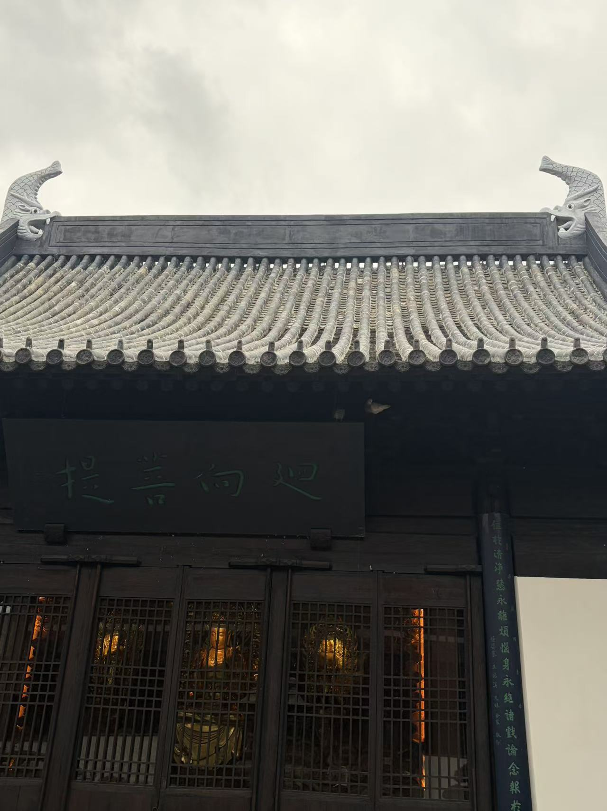

参考摄影 × 实时三维
img2threejs 式人工质量门禁 · 先检查轮廓，再批准材质和微细部。
返回建筑档案 →
檐口 / 外观
殿内 / 木构
01 / 参考照片
外檐

单张照片有相机透视与遮挡，不能自动推导结构尺寸。
02 / 可交互 Three.js 模型
拖动右侧模型至相近角度；人工比对轮廓、出檐、瓦件、斗栱。
本轮人工审核
整体轮廓
屋顶与起翘
瓦作节奏
斗栱节点
证据分级
导出的 JSON 仍标记 PENDING，须由审核者补充截图并签字后才算通过。
导出评审 JSON